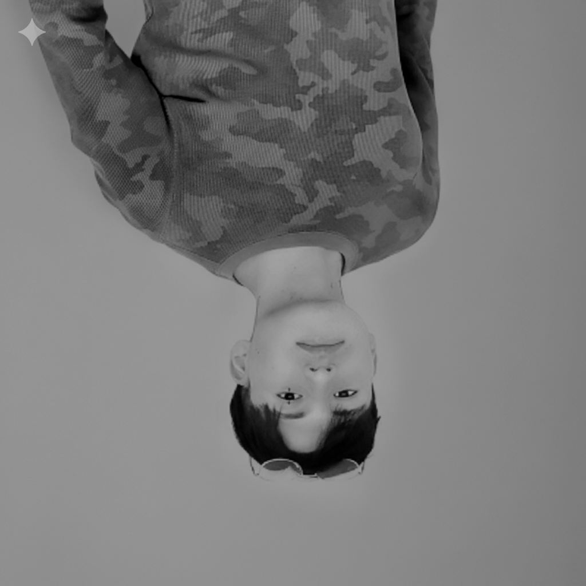

Rosellpc
Full Stack
Diseño y desarrollo interfaces web modernas, rápidas y cuidadas al detalle. Combino UI, animación, responsive design y automatización para transformar ideas en productos digitales sólidos.
FILOSOFÍA DE TRABAJO
Código con propósito
Primero entiendo el problema y a quién va dirigido el producto. Después organizo la solución en partes claras, construyo una primera versión y la mejoro a partir de pruebas y observaciones. Busco que cada decisión técnica tenga un propósito visible en la experiencia final.
Mi enfoque une estética premium, estructura semántica y rendimiento para crear experiencias que se ven bien y funcionan mejor.
Ubicación & enfoque
Cusco, Perú. Trabajo con equipos remotos, comunicación clara y entregas iterativas.
ESPECIALIDAD
Interfaces de alta fidelidad
Experiencias claras, adaptables a distintos dispositivos y cuidadas en cada interacción.
STACK TECNOLÓGICO
Tecnologías Frontend
JavaScript
TypeScript
React
Next.js
Node.js
REST APIs
TailwindCSS
HTML5
CSS
Tecnologías Backend
Python
PostgreSQL
Supabase
Django
Django Rest
FastAPI
FlashAPI
Git
MySQL
Infraestructura
Git
GitHub
CI/CD
AWS
PROYECTO DESTACADO
My Business FastAPI
API de gestion de clientes, planes y transacciones con autenticacion JWT, refresh tokens rotatorios, RBAC (roles/permisos), dashboard analitico y frontend administrativo en Streamlit.
3+
experimentos visuales integrados como base de exploración UI.
100%
maquetación responsive con enfoque mobile-first en los puntos críticos.
A11Y
estructura semántica, foco visible y soporte para reducir animaciones.
CONTACTO
Construyamos algo con buen criterio visual y buena base técnica.
Si tienes una idea, una interfaz por mejorar o un proyecto que necesita dirección frontend, puedo ayudarte a convertirlo en una experiencia clara, rápida y memorable.